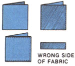
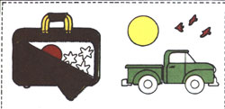
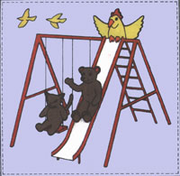
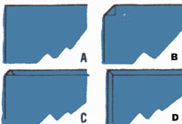

SUNDAY AFTERNOON
A Sunday afternoon's investment of time can reap the reward of many quiet days
When Peggy's son, Keith, was one year old, he was the joy of his mother's life, except on those occasions when she had to bring him along to her meetings. Alert, active, and noisy, he exhausted her until she was ready to fully endorse the old saying "the only quiet youngster is one who's sound asleep!"
Fortunately, however, a seamstress friend helped solve her problem by sending Keith a homemade birthday present: a charming, 10-page booklet that's chock-full of colorful things to button, zip, tie, stick on, and play with-quietly. These quiet books cost just pennies to make, and the idea's merit has been proven by generations of children who have been entertained by these homemade books. After carefully studying her son's book, Peggy tried her hand at making some similar booklets for other children. Although she's no seamstress, Peggy managed to fashion some very nice ones with very little trouble. Here's the format she used:
A quiet book consists of 10 pages (10 double layers of cloth), each of which is deco rated on both sides. The "artwork" is either embroidered or appliqued on plain fabric, and each page contains at least one activity. These may include: taking pieces off or putting them on, opening and shutting parts of a design, and lifting flaps. Finally, some kind of closure (such as tie strings) is usually provided to hold the booklet shut when not in use.
To make one of these books, you'll need about 1 1/2 yards of 45" sturdy fabric-such as denim, duck, or light canvas-with a basic background. You'll also need embroidery thread and needles, some bits and pieces of colorful cloth, scissors, regular needles and thread (even easier and more durable if you use a sewing machine), a fabric-marking pencil, pins, a little bit of stuffing, some Velcro-brand fastening tape, and lots of notions. Kids love snaps, buckles, buttons, zippers, and eyelets with shoelaces. It's a good idea to make a paper facsimile of your booklet before cutting or stitching the fabric, so you'll also need a pad of paper and a pencil.
To prepare the pages, cut ten 10"x20" rectangles from the sturdy cloth, making sure to keep the pieces of uniform size. Fold five of these in half (to 10"x 10"), each with its right sides together, and iron them to sharpen the creases. Then go on to fold the remaining five pieces in half, each with its wrong sides together. Iron them as well. Now, match the rectangles as shown in Fig. 1, arranging them into five pairs, right sides exposed. While you have the iron hot, turn under a 1/4" hem on all four sides of each rectangle and press it flat, mitering the corners (see Fig. 2).
The center folds will become the spine of the booklet. Each pair of rectangles will be decorated on the right sides of the fabric, and then stitched together around the edges. This will produce a total of four pages, front and back. Finally, all five double-layered rectangles will be sewn together on the center crease to make the finished booklet of 10 leaves for a total of 20 decorated pages. (You can see why a preliminary mock-up would be helpful.)
The first and best sources for quiet-book designs are probably your own observations and imagination. For instance, many children have a special interest in a particular subject such as firefighting, boats, animals, or cars. Fascinating scenes and figures can be developed using any or all of these favorite themes. Whatever designs you choose, however, each should involve at least one activity: zipping open an appliqued suitcase that contains some Velcro-backed stick-on toys, perhaps snapping wheels on and off a truck. Other favorite activities include removing and replacing Velcro-fastened sails on a fleet of boats, tying shoelaces in real eyelets on a lightly stuffed, fabric-scrap shoe, or rearranging stick-on animals in a jungle scene. (A popular page in Keith's book features an apple tree outlined with embroidery thread-green for the leaves and brown for the trunk. Apples made from red knit scraps with Velcro backings are stuck to matching Velcro patches on the tree, and the words "Pick the Apples!" are embroidered directly underneath the tree.)
Once you've chosen your designs, sketch them lightly on the background fabric with a marking pencil if you're going to embroider them. If you plan to use appliqued design, make paper patterns from which to work. Be sure to position the artwork-to-be on the right side of the background fabric, then stitch it in place. The pictures can be embroidered or appliqued, or both. Just keep in mind that the booklet and its parts will receive a lot of handling, so all of the components must be assembled securely. (A sewing machine-especially one that makes zigzag stitches-does a good job with appliqué, and may be suitable for free-arm machine embroider, as well.)
When you've covered each half of each of the 10"x20" rectangles, including those of the front and back covers, you're ready to put the booklet together.
The first assembly task will be to make a set of ties (or some other type of closure), perhaps from leftover scraps of fabric. Insert the ends of the ties between the cover rectangle and its matching inside piece (see Fig. 1) and pin them in place. Now pin the two rectangles together, and stitch them all the way around, 1/8" from the outside edge, catching the tie ends as you do so. Go over those joinings twice with the machine. Match and stitch the other rectangles in the same way, making sure that all the designs are right side up before you sew.
When you're done, lay the resulting five double-sided rectangles one on top of the other, lining up the center crease. Check to be sure the front and back covers are on the outside where they belong, and sew all five pieces together with a seam down the center crease. (Again, go over this seam two or three times for extra strength.) Finally, check to see that all the removable parts of each design are in place, close the booklet, and tie it up.
Keith's booklet stays safely tucked away until the time rolls around for a meeting, a conference, or a church service. Because the toy is reserved for special occasions, Keith is always fascinated when he gets to play with it. Furthermore, the little quiet book improves his ability to manipulate zippers, shoelaces, buckles, and buttons while encouraging creative silence at appropriate times!
|
 |
 |
 |
|
 |
|
|